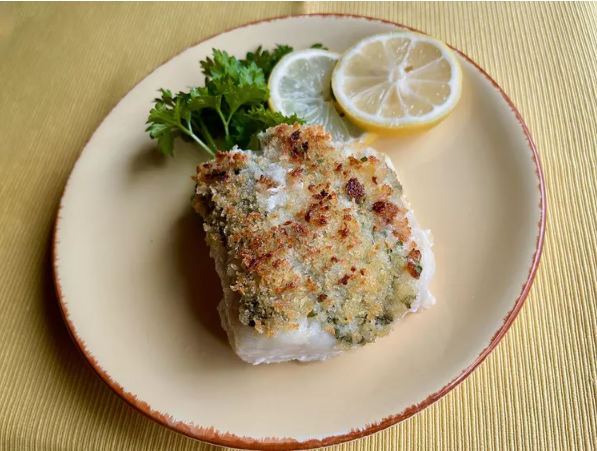

Baked Cod with Lemon Herb Butter

Description
Cod filets, dressed with lemon-herb butter and panko, make quick work of dinner. Garnish with fresh parsley sprigs and lemon slices. To round out the meal, serve with a salad and crusty bread.
Ingredients
- 1 1/2 tablespoons unsalted butter
- 2 tablespoons minced fresh parsley
- 1 teaspoon lemon zest
- 1 clove garlic, minced
- 1/4 teaspoon salt, or to taste
- 1/8 teaspoon white pepper
- 1 teaspoon lemon juice
- 2 (6 to 8- ounce) cod filets
- 2 tablespoons panko breadcrumbs
Steps
- Preheat the oven to 425 degrees F (220 degrees C). Line a baking pan with foil and butter the foil.
- Place 1 1/2 tablespoons butter on a cutting board and spread out in a 3-inch circle. Sprinkle parsley, lemon zest, garlic, salt, and white pepper on the butter circle.
- Mix butter and seasonings with a fork until well blended, about 2 minutes. Mound up the lemon-herb butter and divide in half.
- Pat cod filets dry with a paper towel and place on the buttered pan. Spread half the lemon-herb butter on each filet. Evenly top each filet with panko crumbs.
- Bake filets in the preheated oven until fish flakes easily with a fork and topping is lightly browned, 10 to 12 minutes.